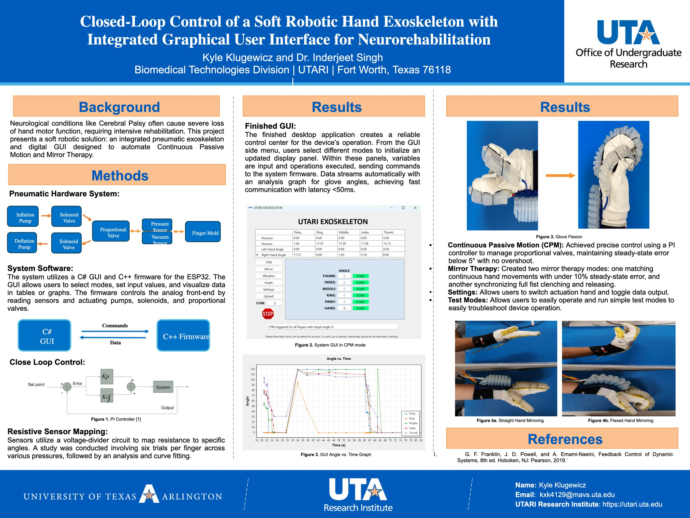
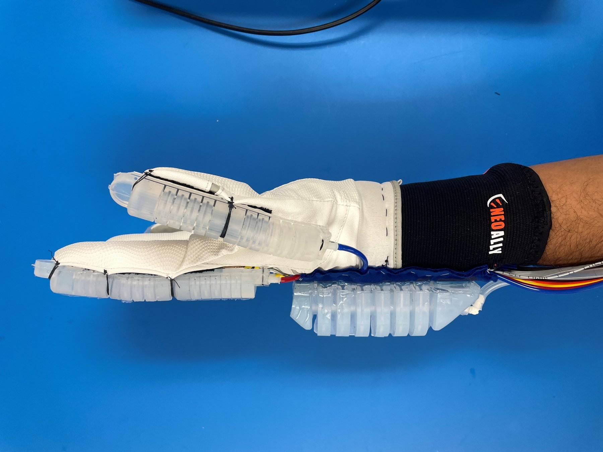
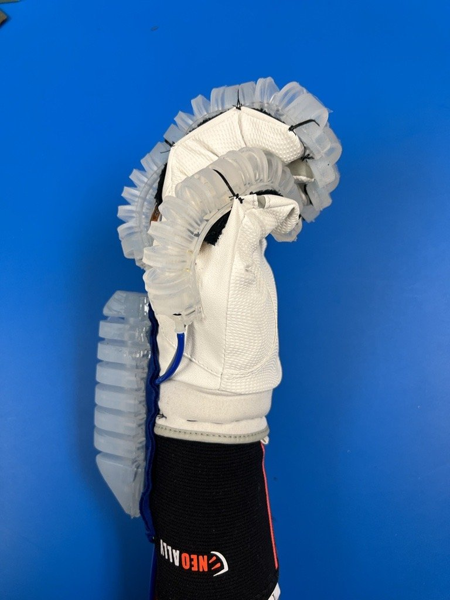
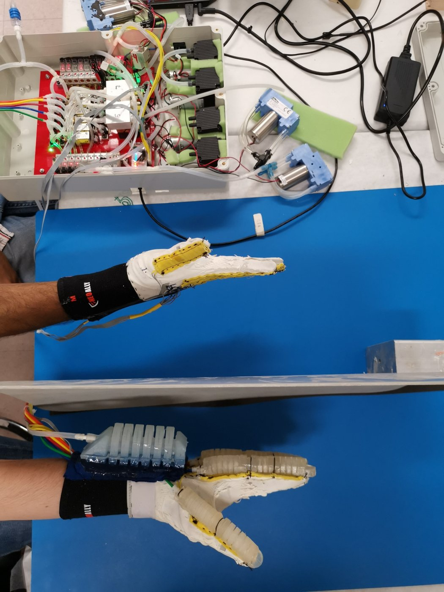
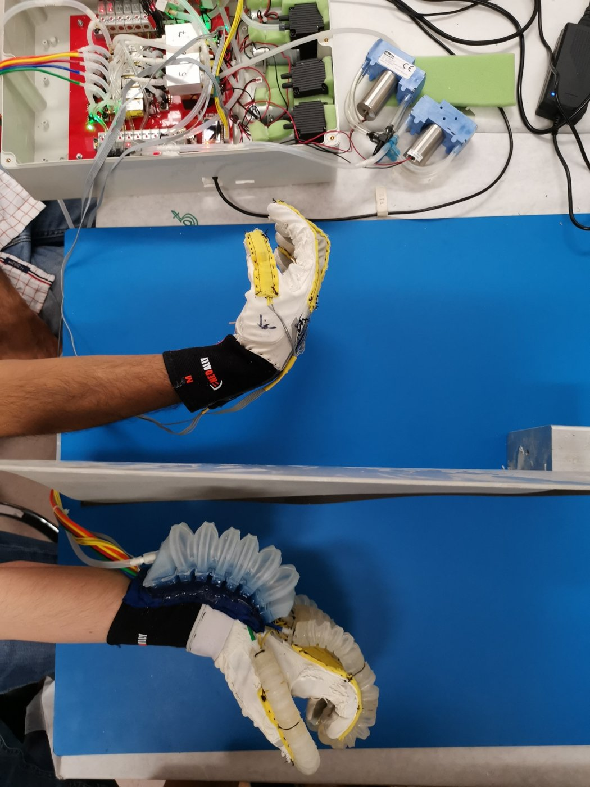
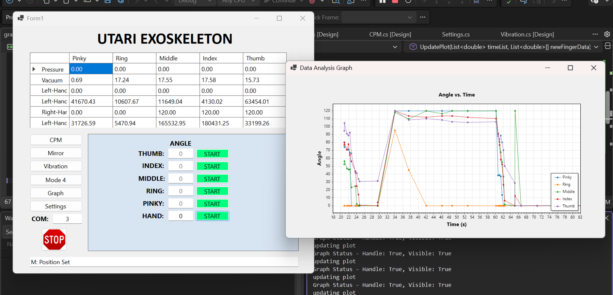
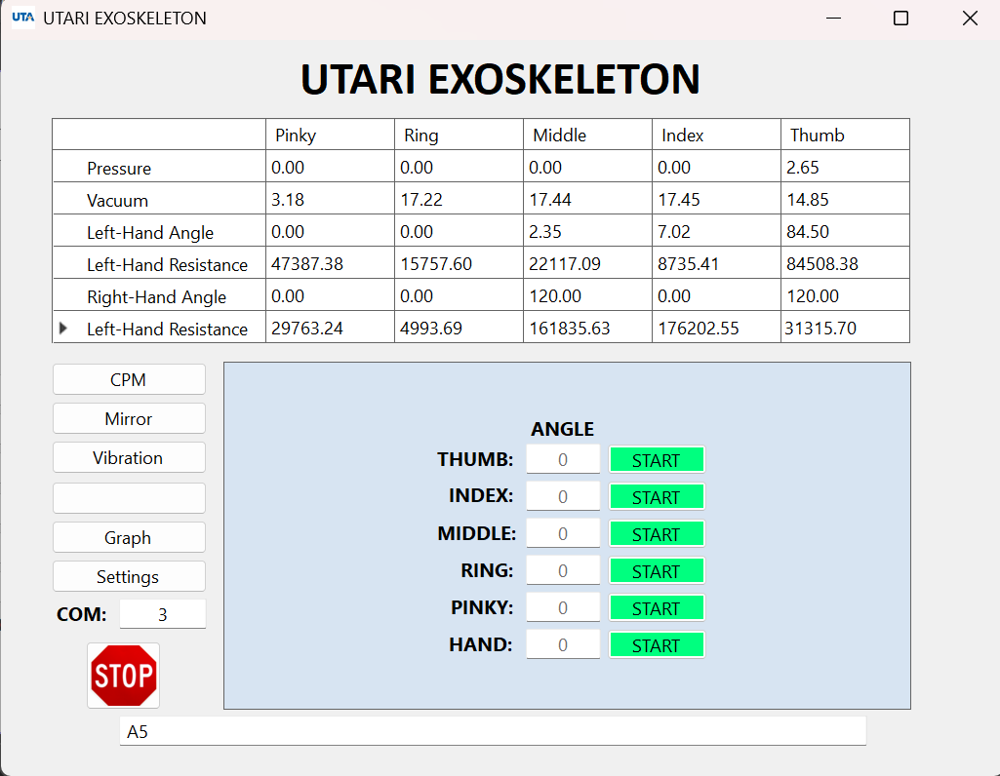
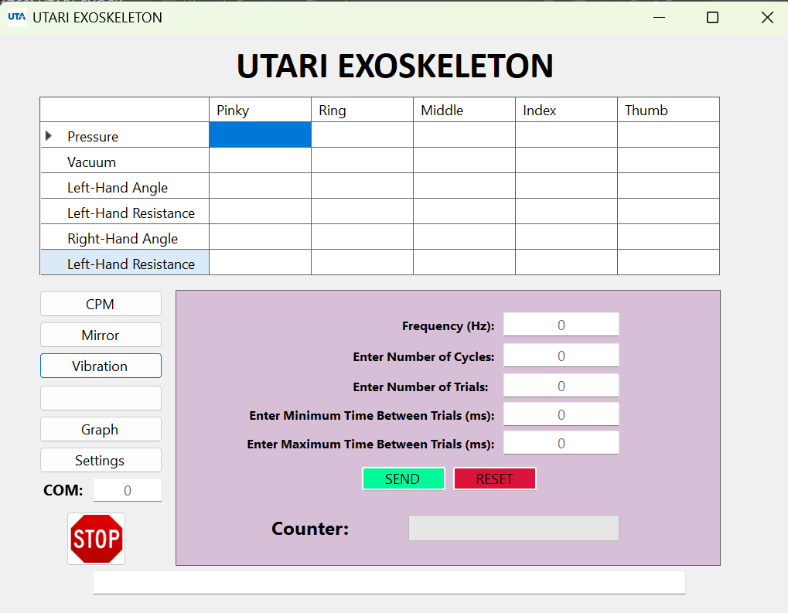

- <5°Steady-state angle error in CPM, with no overshoot
- <10%Steady-state error when mirroring one hand onto the other
- <50 msGUI-to-firmware communication latency
- ±6.1%Average flex-sensor error (±21.9% worst case), measured across 6 trials per finger
Overview
Conditions like cerebral palsy often cause severe loss of hand function, and recovery depends on hours of repetitive therapy. Soft pneumatic exoskeletons are a safe, compliant way to deliver it. Our lab had already built the glove and its analog front end. I built the digital side: ESP32 firmware to drive the pumps and valves, a closed-loop controller to reach target finger angles, and a desktop app that lets a clinician run therapy sessions and watch the data live.
Research poster


How the system works
Pneumatics. Each finger has a soft actuator molded into the glove. An inflation pump and a vacuum pump connect through solenoid valves to a proportional valve, which meters air into or out of each finger. Pressure and vacuum sensors on every line report what the actuator is actually doing.
Electronics. The ESP32 commands the hardware over two buses:
- I²C: a 16-channel PWM driver (PCA9685, set to 1.6 kHz) feeds an op-amp stage that sets each proportional valve. An I²C multiplexer (TCA9548A) splits the bus into eight sub-buses for the angle sensors.
- SPI: a 16-output switch (NXP MC33996) opens and closes the solenoids, five on the inflation line and five on the vacuum line. An analog multiplexer (ADG731) steps through the pressure, vacuum and left/right-hand flex sensors so one converter can read them all.
Software. The C# desktop app and the C++ firmware talk over a serial link. The GUI sends short alphanumeric commands that set the mode and its inputs, and the firmware streams sensor data back, each value tagged with a letter so the GUI knows what it's receiving.
Closed-loop control
Reaching a target finger angle means deciding, many times a second, whether to inflate or deflate and by how much. I wrote a proportional-integral (PI) controller that drives the proportional valves:
- The proportional term acts on the current error and does most of the work, switching between inflation and deflation depending on which side of the target the finger is on.
- The integral term accumulates leftover error to remove the steady-state offset. It's capped at 500 so it can't wind up and over-drive the glove.
- The controller waits through a 50-tick settling window before declaring a move finished, so it doesn't stop on a momentary pass through the target.
In Continuous Passive Motion, it held steady-state error under 5° with no overshoot.




Sensor study
The glove's resistive flex sensors sit in a voltage divider, and the firmware converts the measured resistance into a finger angle. To build that mapping, I ran six trials per finger across a range of pressures and curve-fit the results.
The sensors averaged ±6.1% error but reached ±21.9% at worst. That's fine for monitoring, but too noisy to steer the controller. Based on that finding, I switched the control loop to estimate angle from the pressure sensors, which made it noticeably more stable.
Mirror therapy
In mirror therapy, a patient's unaffected hand leads and the exoskeleton moves the affected hand to match. I built two modes:
- Continuous mirroring: reads the leading hand's flex sensors and drives the other glove to the same angles, with under 10% steady-state error.
- Fist synchronization: mirrors a full clench and release.




The control app
The desktop app is the clinician's control center. A live table shows pressure, vacuum and angle for all five fingers on both hands, and a side menu switches between modes:
- CPM: set a target angle per finger or for the whole hand.
- Mirror: start either mirroring mode.
- Vibration: set frequency, cycle count, number of trials, and a minimum and maximum time between trials.
- Graph: plot finger angles over time as data streams in.
- Settings and test modes: switch which hand is actuated, toggle data output, calibrate the gloves, and run simple test routines for troubleshooting.
- STOP: a stop button that is always visible.





